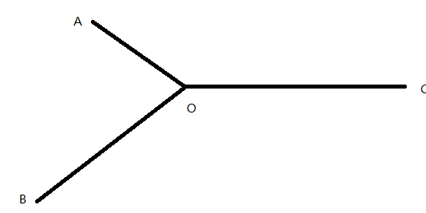

LeetCode上的题库《程序员面试金典》的刷题总结。
数组与字符串
面试题 01.01. 判定字符是否唯一
简单做法：暴力法，两次循环。时间复杂度：$O(n^2)$，空间复杂度：$O(1)$。
使用额外数据结构的方法：哈希集合法，将出现过的字符放入一个set中。时间复杂度：$O(n)$，空间复杂度：$O(n)$。
不使用额外数据结构的方法：
- 排序法。根据字符的ASCII码进行排序，然后判断两两字符是否有相等。时间复杂度：$O(nlogn)$，空间复杂度：$O(1)$。
class Solution:
def isUnique(self, astr: str) -> bool:
s=sorted(astr)
for i in range(len(s)-1):
if s[i]==s[i+1]:
return False
return True- 位运算法。我们使用26个比特位来存放所有字符的访问情况。每次访问到一个字符，获取它的ASCII并减去97，就可以得知它是第几个字母。然后通过左移操作，获取该字符的位数，即x。n用于存放已访问过的字符情况，如果x和n与运算的结果不等于0，说明该字符所在比特位出现了重复，即可返回False。否则，更新n，继续遍历。时间复杂度：$O(n)$，空间复杂度：$O(1)$。（类似于OS中的位示图）
class Solution:
def isUnique(self, astr: str) -> bool:
n=0
for ch in astr:
x=1<<ord(ch)-97
if n&x!=0:
return False
n|=x
return True面试题 01.02. 判定是否互为字符重排
简单方法：ASCII码排序，将两个字符串进行sorted操作，再看是否相等即可。时间复杂度：$O(nlogn)$，空间复杂度：$O(1)$。
还可以使用哈希表，存放字符串内的字符和出现字符串，进行比较。时间复杂度：$O(n)$，空间复杂度：$O(n)$。
class Solution:
def CheckPermutation(self, s1: str, s2: str) -> bool:
dic1={}
dic2={}
for ch in s1:
dic1[ch]= dic1[ch]+1 if ch in dic1.keys() else 1
for ch in s2:
dic2[ch]= dic2[ch]+1 if ch in dic2.keys() else 1
return dic1==dic2面试题 01.03. URL化
简单方法：可以调用python的库，但很明显不是题目想要我们做的。
我们可以倒序遍历，对S进行替换。使用双指针i和j，i用于遍历原字符串的真实长度，j用于控制新字符串的生成。具体代码如下所示：
class Solution:
def replaceSpaces(self, S: str, length: int) -> str:
i=length-1
j=len(S)-1
S=list(S)#Python要先替换为字符列表，才能按位修改
while (i>=0):
if S[i]==" ":
S[j],S[j-1],S[j-2]="0","2","%"
j-=3
i-=1
else:
S[j]=S[i]
j-=1
i-=1
return "".join(S[j+1:])为什么要倒序？防止正序遍历替换空格时可能将尚未遍历的字符替换掉。
这题貌似有点问题，不知道为什么替换后的字符串无法正好填满字符数组，所以要用j指针的最后位置来返回。
- 时间复杂度：$O(n)$
面试题 01.04. 回文排列
回文排列的条件是：仅有1个或0个字符出现的次数为奇数次，其余都是偶数次，这样才能实现两两匹配。
所以，我们可以使用哈希表统计一下字符串内字符出现的次数，看是否符合上述条件即可。
class Solution:
def canPermutePalindrome(self, s: str) -> bool:
dic={}
for ch in s:
dic[ch]=dic[ch]+1 if ch in dic.keys() else 1
count=0
for key in dic.keys():
if dic[key]%2==1:
count+=1
if count>1:
return False
return True面试题 01.05. 一次编辑
这道题是一道经典的动态规划题目，叫做编辑距离，在我的LeetCode笔记中有详细的介绍。我们可以通过动态规划转移的方法，计算出从first到second最少需要转移的次数，看其是否小于等于1即可。
- 时间复杂度：$O(MN)$。
- 空间复杂度：$O(MN)$。
class Solution:
def oneEditAway(self, first: str, second: str) -> bool:
dp=[[0 for _ in range(len(second)+1)] for _ in range(len(first)+1)]
for i in range(len(first)+1):
for j in range(len(second)+1):
if i==0:
dp[i][j]=j
elif j==0:
dp[i][j]=i
else:
if first[i-1]==second[j-1]:
dp[i][j]=dp[i-1][j-1]
else:
dp[i][j]=min(dp[i][j-1],min(dp[i-1][j-1],dp[i-1][j]))+1
return dp[-1][-1]<=1特别地，这道题不需要求解具体的最小编辑次数，所以我们可以使用更为简单的解法。
我们保证first字符串的长度大于等于second字符串。然后将二者的字符两两比较，如果在位置 i 处出现了不相等的字符，那么：
- 如果二者长度相等，就比较first[i+1:]和second[i+1:]（假设当前为替换操作，如果二者后面的字符串相等，则可以仅编辑一次），如 leetcode 与 leetkode。
- 如果二者长度不等，就比较first[i+1:]和second[i:]（假设当前为删除操作），如 leetcode 与 leetode。
如果上述比较没有返回结果，说明second是first的子串，此时我们只需要比较二者的长度差是否小于等于1，即可知道编辑距离是否小于等于1。
class Solution:
def oneEditAway(self, first: str, second: str) -> bool:
if len(first)<len(second):
first,second=second,first
for i in range(len(second)):
if first[i]!=second[i]:
if len(first)==len(second):
return first[i+1:]==second[i+1:]
else:
return first[i+1:]==second[i:]
return len(first)-len(second)<=1面试题 01.06. 字符串压缩
我的做法是采用双指针法，r指针用于遍历原字符串，l用于确定重复字符区间的开头。每次遍历到不在当前重复字符区间内的字符，就将当前重复区间进行压缩，并移动 l 指针至当前字符。
- 时间复杂度：$O(n)$.
- 空间复杂度：$O(n)$.
class Solution:
def compressString(self, S: str) -> str:
if S=="":
return S
l=0
r=0
res=""
while r<len(S):
if S[r]!=S[l]:
res+=S[l]+str(r-l)
l=r
else:
r+=1
res+=S[l]+str(r-l)
return res if len(res)<len(S) else S面试题 01.07. 旋转矩阵
这题是矩阵操作的经典题目，主站也有。需要一定的数学知识。基本思路是：先对当前矩阵求转置，接着求左右翻转即可。
- 时间复杂度：$O(n^2)$.
- 空间复杂度：$O(1)$.
class Solution:
def rotate(self, matrix: List[List[int]]) -> None:
"""
Do not return anything, modify matrix in-place instead.
"""
rowLen=len(matrix)
colLen=len(matrix[0])
for i in range(rowLen):
for j in range(i+1,colLen):
matrix[i][j],matrix[j][i]=matrix[j][i],matrix[i][j]
for i in range(rowLen):
for j in range(colLen//2):
matrix[i][j],matrix[i][colLen-j-1]=matrix[i][colLen-j-1],matrix[i][j]面试题 01.08. 零矩阵
这道题我们可以使用两个集合标记一下需要被清零的行和列，进行两次遍历即可。
- 时间复杂度：$O(n^2)$.
- 空间复杂度：$O(n)$.
class Solution:
def setZeroes(self, matrix: List[List[int]]) -> None:
"""
Do not return anything, modify matrix in-place instead.
"""
row=set()
col=set()
for i in range(len(matrix)):
for j in range(len(matrix[0])):
if matrix[i][j]==0:
row.add(i)
col.add(j)
for i in range(len(matrix)):
for j in range(len(matrix[0])):
if i in row or j in col:
matrix[i][j]=0面试题 01.09. 字符串轮转
这道题的思路，我们可以借鉴主站中的字符串轮转题目。我们可以采用数组实现队列的方式，当需要进行轮转时，将指针重新转移到字符串的开头即可。
所以，我们对s1进行重复地拼接，如果s2在拼接后的s1中，且s2与s1的原长相等，则说明s2可以由s1轮转而来。
例如：
s1“waterbottle”重复拼接后得到“waterbottlewaterbottle”，而s2“erbottlewat”在其中，且二者原长相等。则可以返回True。
class Solution:
def isFlipedString(self, s1: str, s2: str) -> bool:
if s1=="" and s2=="":
return True
if s1=="" or s2=="":
return False
tmp=len(s1)
s1+=s1
return s2 in s1 and len(s2)==tmp链表
面试题 02.01. 移除重复节点
我的做法是采用哈希集合来存放已出现过的节点值，然后使用指针遍历链表。对值已经出现过的链表进行删除处理。
因为链表中删除节点需要使用的是前一个节点，所以我们通过判断当前节点的下一节点是否重复，来进行删除。如果重复，那么就删除，并且再次判断新的next节点；如果不重复，那么就移动指针继续向后遍历。
- 时间复杂度：$O(n)$.
- 空间复杂度：$O(n)$.
# Definition for singly-linked list.
# class ListNode:
# def __init__(self, x):
# self.val = x
# self.next = None
class Solution:
def removeDuplicateNodes(self, head: ListNode) -> ListNode:
if head!=None:
hs=set()
hs.add(head.val)
p=head
while p.next!=None:
if p.next.val not in hs:
hs.add(p.next.val)
p=p.next
else:
p.next=p.next.next
return head面试题 02.02. 返回倒数第 k 个节点
双指针法。通过一个间隔为k的快慢指针进行返回。当快指针遍历到链表尾部时，返回此时慢指针的节点值即可。
# Definition for singly-linked list.
# class ListNode:
# def __init__(self, x):
# self.val = x
# self.next = None
class Solution:
def kthToLast(self, head: ListNode, k: int) -> int:
slow=head
fast=head
count=0
while fast!=None:
if count==k:#当快指针走出k步后，慢指针开始行动
slow=slow.next
fast=fast.next
elif count<k:
fast=fast.next
count+=1
return slow.val面试题 02.03. 删除中间节点
主站原题，这道题比较有意思，无法通过修改前一个节点的next指针来删除当前节点。所以我们需要将当前节点与下一个节点进行交换，将删除当前节点转变为删除下一个节点。即可通过修改当前节点的next指针进行删除。
# Definition for singly-linked list.
# class ListNode:
# def __init__(self, x):
# self.val = x
# self.next = None
class Solution:
def deleteNode(self, node):
"""
:type node: ListNode
:rtype: void Do not return anything, modify node in-place instead.
"""
node.val=node.next.val
node.next=node.next.next但其实我觉得题目出得不好，这样并没有真正删除节点，只是删除了值。
面试题 02.04. 分割链表
这道题出题人的语文没学好，讲的很混乱。但是基本意思就是给定一个值，让链表中小于这个值的数字都位于大于等于这个值的数字之前。
我们使用头插法进行操作，当遍历到的值小于x时，将其插入到链表头部即可。
# Definition for singly-linked list.
# class ListNode:
# def __init__(self, x):
# self.val = x
# self.next = None
class Solution:
def partition(self, head: ListNode, x: int) -> ListNode:
p=head
while p!=None and p.next!=None:
if p.next.val<x:
tmp=p.next
p.next=p.next.next
tmp.next=head
head=tmp
else:#与之前2.1的删除节点方法类似，删除节点后不能移动指针p，因为无法保证删除后的下一节点没问题。
p=p.next
return head面试题 02.05. 链表求和
大数加法的链表形式。一次遍历用于相加，一次遍历用于进位。
# Definition for singly-linked list.
# class ListNode:
# def __init__(self, x):
# self.val = x
# self.next = None
class Solution:
def addTwoNumbers(self, l1: ListNode, l2: ListNode) -> ListNode:
n=0
p=l1
q=l2
dummyhead=ListNode(0)
r=dummyhead
while p!=None and q!=None:#按位相加
now=p.val+q.val+n
node=ListNode(now)
r.next=node
p,q,r=p.next,q.next,r.next
if p==None and q!=None:
r.next=q
if q==None and p!=None:
r.next=p
r=dummyhead
while r.next!=None:#进位
now=r.next.val+n
n=now//10
r.next.val=now%10
r=r.next
if n==1:
r.next=ListNode(1)
return dummyhead.next
面试题 02.06. 回文链表
主站原题。最简单的方法是遍历一次后将链表中的数据存入数组中，再判断是否为回文数组，但那样需要使用额外的空间。
如果不想使用额外空间，可以用如下的方法：
- 快慢指针法找到链表的中间点。
- 翻转后一半链表。
- 双指针法，从两头开始向内遍历，比较是否完全相等。
# Definition for singly-linked list.
# class ListNode:
# def __init__(self, x):
# self.val = x
# self.next = None
class Solution:
def isPalindrome(self, head: ListNode) -> bool:
if head==None or head.next==None:
return True
p=head
q=head.next
while q!=None and q.next!=None:#寻找链表中点
p=p.next
q=q.next.next
q=p.next
p=None
while q!=None:#翻转后半链表
tmp=q.next
q.next=p
p,q=q,tmp
q=head
while p!=None:#双指针比较
if p.val!=q.val:
return False
p,q=p.next,q.next
return True- 时间复杂度：$O(n)$
- 空间复杂度：$O(1)$
面试题 02.07. 链表相交
剑指Offer的原题，如下图所示：我们只需要让两个指针p、q各自从A、B出发，走到C点后，p转移至B，q转移至A，这样，两个指针在o点处走的路程分别为：AO+OC+BO和BO+OC+AO。所以，假设存在交点，二者必然在O点相交。如果不存在交点，二者将同时走到尽头。

# Definition for singly-linked list.
# class ListNode:
# def __init__(self, x):
# self.val = x
# self.next = None
class Solution:
def getIntersectionNode(self, headA: ListNode, headB: ListNode) -> ListNode:
if headA==None or headB==None:
return None
p=headA
q=headB
while p!=q:
p,q=p.next,q.next
if p==None and q==None:
return None
if p==None:
p=headB
if q==None:
q=headA
return p=面试题 02.08. 环路检测
剑指Offer原题，之前已经细致地推导过了。我们只需要让一对快慢指针同时出发，快指针每次走两步，慢指针每次走一步。二者最终必然在环路中相遇。此时，慢指针走过的路程为s，快指针的路程为f，则f=2s且f=s+nb，b为环路的长度，nb表示快指针比慢指针多走了n圈环路。所以，s=nb。
此时，我们将快指针移回链表头部，和慢指针同步移动。最终，二者必然在环路入口处相遇。因为a+nb与a必然相遇。
# Definition for singly-linked list.
# class ListNode:
# def __init__(self, x):
# self.val = x
# self.next = None
class Solution:
def detectCycle(self, head: ListNode) -> ListNode:
if head==None:
return None
p=head
q=head
while True:
if q==None or q.next==None:
return None
p=p.next
q=q.next.next
if p==q:
break
q=head
while p!=q:
p=p.next
q=q.next
return p面试题 03.01. 三合一
简单的数据结构类题目，使用数组模拟栈，并用一个列表存放三个栈各自的curlen指针。
使用下标运算的方式存取元素。
class TripleInOne:
def __init__(self, stackSize: int):
self.stack=[None for _ in range(stackSize*3)]
self.curlen=[0,0,0]
self.stackSize=stackSize
def push(self, stackNum: int, value: int) -> None:
if self.curlen[stackNum]<self.stackSize:
self.stack[stackNum*self.stackSize+self.curlen[stackNum]]=value
self.curlen[stackNum]+=1
def pop(self, stackNum: int) -> int:
if self.curlen[stackNum]>0:
self.curlen[stackNum]-=1
return self.stack[stackNum*self.stackSize+self.curlen[stackNum]]
return -1
def peek(self, stackNum: int) -> int:
if self.curlen[stackNum]>0:
return self.stack[stackNum*self.stackSize+self.curlen[stackNum]-1]
return -1
def isEmpty(self, stackNum: int) -> bool:
return self.curlen[stackNum]==0
# Your TripleInOne object will be instantiated and called as such:
# obj = TripleInOne(stackSize)
# obj.push(stackNum,value)
# param_2 = obj.pop(stackNum)
# param_3 = obj.peek(stackNum)
# param_4 = obj.isEmpty(stackNum)面试题 03.02. 栈的最小值
剑指Offer原题，时间换空间，用一个辅助栈存放当前栈内某个数及其之前所有数对应的最小值。每次有元素入栈、出栈时，都需要更新最小栈。这样就实现了常数级别的时间复杂度。
class MinStack:
def __init__(self):
"""
initialize your data structure here.
"""
self.stack=[]
self.mini=[]
def push(self, x: int) -> None:
if self.stack==[]:
self.mini.append(x)
else:
self.mini.append(min(x,self.mini[-1]))
self.stack.append(x)
def pop(self) -> None:
self.mini.pop()
return self.stack.pop()
def top(self) -> int:
return self.stack[-1]
def getMin(self) -> int:
return self.mini[-1]
# Your MinStack object will be instantiated and called as such:
# obj = MinStack()
# obj.push(x)
# obj.pop()
# param_3 = obj.top()
# param_4 = obj.getMin()面试题 03.03. 堆盘子
这题不是很难，但要考虑的情况较多。python中可以直接使用二维列表来模拟题目中所说的栈，按照题目要求进行操作即可，当pop后某一堆盘子为空时，需要将其栈进行删除操作。
class StackOfPlates:
def __init__(self, cap: int):
self.stackLi=[]
self.cap=cap
def push(self, val: int) -> None:
if self.cap==0:
return
if self.stackLi==[] or len(self.stackLi[-1])==self.cap:
self.stackLi.append([val])
else:
self.stackLi[-1].append(val)
def pop(self) -> int:
if self.stackLi==[]:
return -1
res=self.stackLi[-1].pop()
if self.stackLi[-1]==[]:
self.stackLi.pop()
return res
def popAt(self, index: int) -> int:
if index<len(self.stackLi):
res=self.stackLi[index].pop()
if self.stackLi[index]==[]:
self.stackLi.pop(index)
return res
return -1
# Your StackOfPlates object will be instantiated and called as such:
# obj = StackOfPlates(cap)
# obj.push(val)
# param_2 = obj.pop()
# param_3 = obj.popAt(index)